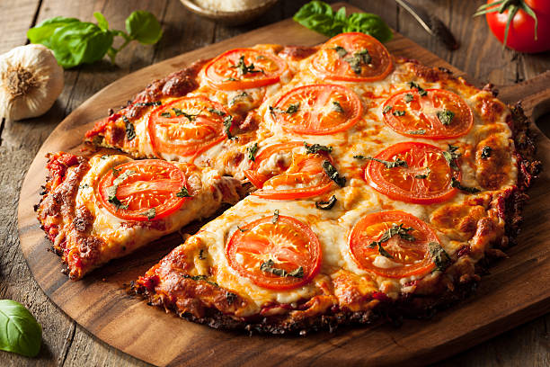

Elaborar nuestra propia receta de pizza casera fácil es un proceso mucho más sencillo de lo que creemos, solo necesitamos conocer los ingredientes para pizza necesarios y el proceso a seguir para integrarlos. En RecetasGratis queremos que aprendas recetas fáciles que te permitan preparar platos exquisitos y únicos, como diferentes variedades de pizzas caseras. Por ello, aquí te mostramos cómo hacer pizza casera, ¿vas a perdértela?
Para hacer una buena pizza pepperoni napolitana haremos una buena masa casera. Para hacerla necesitamos:
Para hacer la cobertura de la pizza necesitamos
¡Empezamos por la masa! Juntamos la harina, la sal, el azúcar y el aceite de oliva en un bol para batir. Después, disolvemos la levadura en el agua tibia y lo juntamos con los demás ingredientes. Lo mezclamos todo bien mezclado hasta que sea una bola. Después se tapa con un paño y lo dejamos una hora aproximadamente para que crezca.
Pasado el tiempo de reposo, extendemos la masa con forma redonda o cuadrada. Lo mejor, si queremos una auténtica pizza napolitana, será hacerla redonda. Podemos añadir un poco de harina en la superficie y en el rodillo.
Cuando está lista la masa añadimos los ingredientes para hacer nuestra pizza pepperoni. Ponemos primero la salsa de tomate junto con las especies. Después colocamos el salame y, finalmente, el queso mozzarella. Si nos gusta mucho el queso también podemos añadir queso rallado encima de la mozzarella.
La introducimos en el horno durante una media hora a 170ºC, ¡aunque el tiempo es relativo! Hay que fijarse en los bordes de la pizza y en el queso, y cuando los bordes estén dorados y el queso bien deshecho, ¡la pizza ya estará lista!